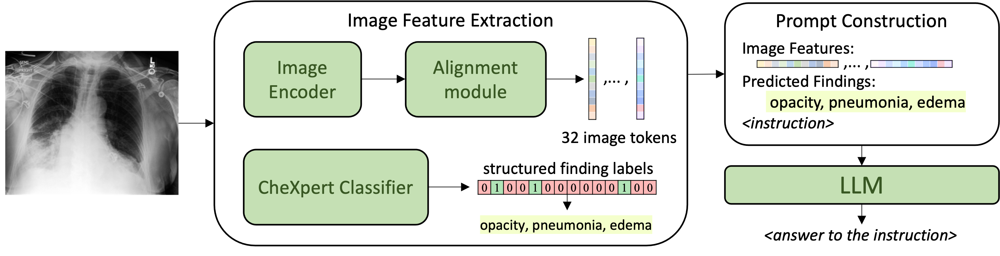

Conversational AI tools that can generate and discuss clinically correct radiology reports for a given medical image have the potential to transform radiology. Such a human-in-the-loop radiology assistant could facilitate a collaborative diagnostic process, thus saving time and improving the quality of reports. Towards this goal, we introduce RaDialog, the first thoroughly evaluated and publicly available large vision-language model for radiology report generation and interactive dialog. RaDialog effectively integrates visual image features and structured pathology findings with a large language model (LLM) while simultaneously adapting it to a specialized domain using parameter-efficient fine-tuning. To keep the conversational abilities of the underlying LLM, we propose a comprehensive, semi-automatically labeled, image-grounded instruct dataset for chest X-ray radiology tasks. By training with this dataset, our method achieves state-of-the-art clinical correctness in report generation and shows impressive abilities in interactive tasks such as correcting reports and answering questions, serving as a foundational step toward clinical dialog systems.
Method Overview
- RaDialog integrates both image features and structured pathology labels for clinically correct report generation.
- The image information is integrated with a large language model enabling conversational downstream tasks.
- We adapt the LLM using parameter-efficient fine-tuning to teach image understanding and radiological knowledge.
- RaDialog achieves SOTA results in clinical correctness of report generation.
RaDialog Instruct Dataset
- We propose a diverse instruct dataset that allows us to keep the general capacities of LLMs while learning radiology-specific knowledge and style.
- Our dataset includes diverse tasks from report generation to report correction and question answering.
- The dataset is constructed using a mixture of existing datasets and LLM-generated pseudo-ground truth answers.
- Training with this instruct dataset greatly improves RaDialog's performance in interactive downstream tasks.
BibTeX
@misc{pellegrini2023radialog,
title={RaDialog: A Large Vision-Language Model for Radiology Report Generation and Conversational Assistance},
author={Chantal Pellegrini and Ege Özsoy and Benjamin Busam and Nassir Navab and Matthias Keicher},
year={2023},
eprint={2311.18681},
archivePrefix={arXiv},
primaryClass={cs.CV}
}